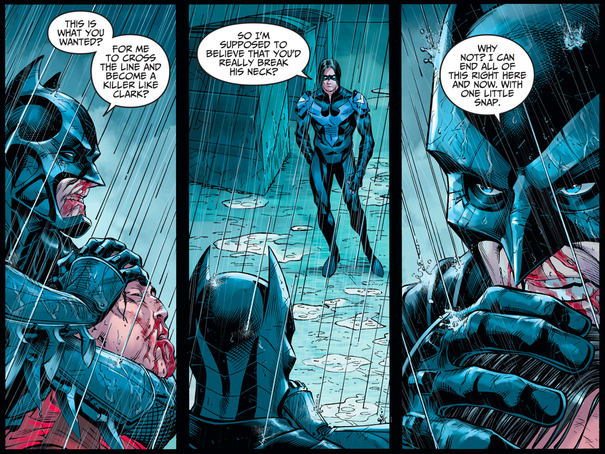
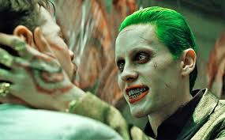

Batman doesn't Kill
Finger underlined Batman’s moral code further in “The Origin of Batman” in Batman #47 (1948). The hero comes across the gangster Joe Chill, recognizing him as the killer of Martha and Thomas Wayne. Rather than kill the man, Batman wants him arrested, and, desperately hoping to prompt a confession, Bruce reveals his identity to Chill. In a panic, the killer flees and begs his henchmen for help, explaining he accidentally inspired Batman’s creation. In a rage, they shoot him down. Batman takes no pleasure in this death. He brings Chill’s killers to justice, something he couldn’t do for his own parents, and simply deems the Wayne murder case finally closed.
One little Snap
Batman's Superpowers
- He is smart
- He is rich
- He is tech savy
- He owns a BAT-MOBILE
His enemies
- Superman
- Joker 
- Riddler
- Penguin